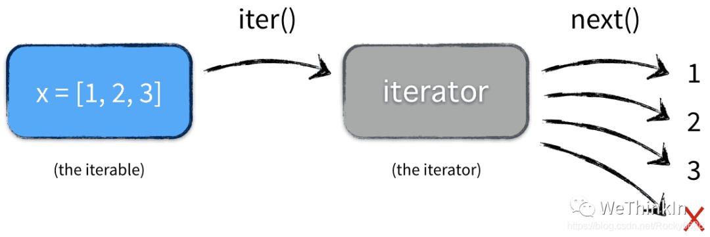

Python进阶知识高频考点
created: 2025-01-25T00:41 updated: 2025-01-26T02:20
目录
- 1.Python中迭代器的概念？
- 2.Python中生成器的相关知识
- 3.Python中装饰器的相关知识
- 4.Python的深拷贝与浅拷贝？
- 5.Python的垃圾回收机制
- 6.Python中 $ *args $ 和 $ **kwargs $ 的区别？
- 7.Python中Numpy的broadcasting机制？
- 8.python中@staticmethod和@classmethod使用注意事项
- 9.Python中有哪些常用的设计模式？
- 10.Python中的lambda表达式？
- 11.介绍一下Python中的引用计数原理，如何消除一个变量上的所有引用计数?
- 12.有哪些提高python运行效率的方法?
- 13.线程池与进程池的区别是什么?
- 14.multiprocessing模块怎么使用?
- 15.ProcessPoolExecutor怎么使用?
- 16.Python中什么情况下会产生内存泄漏?
- 17.介绍一下Python中的封装(Encapsulation)思想
- 18.介绍一下Python中的继承（Inheritance）思想
- 19.介绍一下Python中的多态（Polymorphism）思想
- 20.介绍一下Python的自省特性
- 21.介绍一下Python中的sequence和mapping代表的数据结构
1.Python中迭代器的概念？
可迭代对象是迭代器、生成器和装饰器的基础。简单来说，可以使用for来循环遍历的对象就是可迭代对象。比如常见的list、set和dict。
我们来看一个🌰：
from collections import Iterable
print(isinstance('abcddddd', Iterable)) # str是否可迭代
print(isinstance([1,2,3,4,5,6], Iterable)) # list是否可迭代
print(isinstance(12345678, Iterable)) # 整数是否可迭代
-------------结果如下----------------
True
True
False
当对所有的可迭代对象调用 dir() 方法时，会发现他们都实现了 iter 方法。这样就可以通过 iter(object) 来返回一个迭代器。
x = [1, 2, 3]
y = iter(x)
print(type(x))
print(type(y))
------------结果如下------------
<class 'list'>
<class 'list_iterator'>
可以看到调用iter()之后，变成了一个list_iterator的对象。可以发现增加了一个__next__方法。所有实现了__iter__和__next__两个方法的对象，都是迭代器。
迭代器是带状态的对象，它会记录当前迭代所在的位置，以方便下次迭代的时候获取正确的元素。__iter__返回迭代器自身，__next__返回容器中的下一个值，如果容器中没有更多元素了，则抛出Stoplteration异常。
x = [1, 2, 3]
y = iter(x)
print(next(y))
print(next(y))
print(next(y))
print(next(y))
----------结果如下----------
1
2
3
Traceback (most recent call last):
File "/Users/Desktop/test.py", line 6, in <module>
print(next(y))
StopIteration
如何判断对象是否是迭代器，和判断是否是可迭代对象的方法差不多，只要把 Iterable 换成 Iterator。
Python的for循环本质上就是通过不断调用next()函数实现的，举个栗子，下面的代码先将可迭代对象转化为Iterator，再去迭代。这样可以节省对内存，因为迭代器只有在我们调用 next() 才会实际计算下一个值。
x = [1, 2, 3]
for elem in x:
...

itertools 库提供了很多常见迭代器的使用。
>>> from itertools import count # 计数器
>>> counter = count(start=13)
>>> next(counter)
13
>>> next(counter)
14
2.Python中生成器的相关知识
我们创建列表的时候，受到内存限制，容量肯定是有限的，而且不可能全部给他一次枚举出来。Python常用的列表生成式有一个致命的缺点就是定义即生成，非常的浪费空间和效率。
如果列表元素可以按照某种算法推算出来，那我们可以在循环的过程中不断推算出后续的元素，这样就不必创建完整的list，从而节省大量的空间。在Python中，这种一边循环一边计算的机制，称为生成器：generator。
要创建一个generator，最简单的方法是改造列表生成式：
a = [x * x for x in range(10)]
print(a)
b = (x * x for x in range(10))
print(b)
--------结果如下--------------
[0, 1, 4, 9, 16, 25, 36, 49, 64, 81]
<generator object <genexpr> at 0x10557da50>
还有一个方法是生成器函数，通过def定义，然后使用yield来支持迭代器协议，比迭代器写起来更简单。
def spam():
yield"first"
yield"second"
yield"third"
for x in spam():
print(x)
-------结果如下---------
first
second
third
进行函数调用的时候，返回一个生成器对象。在使用next()调用的时候，遇到yield就返回，记录此时的函数调用位置，下次调用next()时，从断点处开始。
我们完全可以像使用迭代器一样使用 generator ，当然除了定义。定义一个迭代器，需要分别实现 iter() 方法和 next() 方法，但 generator 只需要一个小小的yield。
generator还有 send() 和 close() 方法，都是只能在next()调用之后，生成器处于挂起状态时才能使用的。
python是支持协程的，也就是微线程，就是通过generator来实现的。配合generator我们可以自定义函数的调用层次关系从而自己来调度线程。
3.Python中装饰器的相关知识
装饰器允许通过将现有函数传递给装饰器，从而向现有函数添加一些额外的功能，该装饰器将执行现有函数的功能和添加的额外功能。
装饰器本质上还是一个函数，它可以让已有的函数不做任何改动的情况下增加功能。
接下来我们使用一些例子来具体说明装饰器的作用：
如果我们不使用装饰器，我们通常会这样来实现在函数执行前插入日志：
def foo():
print('i am foo')
def foo():
print('foo is running')
print('i am foo')
虽然这样写是满足了需求，但是改动了原有的代码，如果有其他的函数也需要插入日志的话，就需要改写所有的函数，这样不能复用代码。
我们可以进行如下改写：
import logging
def use_log(func):
logging.warning("%s is running" % func.__name__)
func()
def bar():
print('i am bar')
use_log(bar) #将函数作为参数传入
-------------运行结果如下--------------
WARNING:root:bar is running
i am bar
这样写的确可以复用插入的日志，缺点就是显式的封装原来的函数，我们希望能隐式的做这件事。
我们可以用装饰器来写：
import logging
def use_log(func):
def wrapper(*args, **kwargs):
logging.warning('%s is running' % func.__name__)
return func(*args, **kwargs)
return wrapper
def bar():
print('I am bar')
bar = use_log(bar)
bar()
------------结果如下------------
WARNING:root:bar is running
I am bar
其中，use_log函数就是装饰器，它把我们真正想要执行的函数bar()封装在里面，返回一个封装了加入代码的新函数，看起来就像是bar()被装饰了一样。
但是这样写还是不够隐式，我们可以通过@语法糖来起到bar = use_log(bar)的作用。
import logging
def use_log(func):
def wrapper(*args, **kwargs):
logging.warning('%s is running' % func.__name__)
return func(*args, **kwargs)
return wrapper
@use_log
def bar():
print('I am bar')
@use_log
def haha():
print('I am haha')
bar()
haha()
------------结果如下------------
WARNING:root:bar is running
I am bar
WARNING:root:haha is running
I am haha
这样子看起来就非常简洁，而且代码很容易复用。可以看成是一种智能的高级封装。
4.Python的深拷贝与浅拷贝？
在Python中，用一个变量给另一个变量赋值，其实就是给当前内存中的对象增加一个“标签”而已。
>>> a = [6, 6, 6, 6]
>>> b = a
>>> print(id(a), id(b), sep = '\n')
66668888
66668888
>>> a is b
True（可以看出，其实a和b指向内存中同一个对象。）
浅拷贝是指创建一个新的对象，其内容是原对象中元素的引用（新对象与原对象共享内存中的子对象）。
注：浅拷贝和深拷贝的不同仅仅是对组合对象来说，所谓的组合对象就是包含了其他对象的对象，如列表，类实例等等。而对于数字、字符串以及其他“原子”类型，没有拷贝一说，产生的都是原对象的引用。
常见的浅拷贝有：切片操作、工厂函数、对象的copy()方法，copy模块中的copy函数。
>>> a = [6, 8, 9]
>>> b = list(a)
>>> print(id(a), id(b))
4493469248 4493592128 #a和b的地址不同
>>> for x, y in zip(a, b):
... print(id(x), id(y))
...
4489786672 4489786672
4489786736 4489786736
4489786768 4489786768
# 但是他们的子对象地址相同
从上面的例子中可以看出，a浅拷贝得到b，a和b指向内存中不同的list对象，但是他们的元素指向相同的int对象，这就是浅拷贝。
深拷贝是指创建一个新的对象，然后递归的拷贝原对象所包含的子对象。深拷贝出来的对象与原对象没有任何关联。
深拷贝只有一种方式：copy模块中的deepcopy函数。
我们接下来用一个包含可变对象的列表来确切地展示浅拷贝和深拷贝的区别：
>>> a = [[6, 6], [8, 8], [9, 9]]
>>> b = copy.copy(a) # 浅拷贝
>>> c = copy.deepcopy(a) # 深拷贝
>>> print(id(a), id(b)) # a和b地址不同
4493780304 4494523680
>>> for x, y in zip(a, b): # a和b的子对象地址相同
... print(id(x), id(y))
...
4493592128 4493592128
4494528592 4494528592
4493779024 4493779024
>>> print(id(a), id(c)) # a和c不同
4493780304 4493469248
>>> for x, y in zip(a, c): # a和c的子对象地址也不同
... print(id(x), id(y))
...
4493592128 4493687696
4494528592 4493686336
4493779024 4493684896
5.Python的垃圾回收机制
在Python中，使用引用计数进行垃圾回收；同时通过标记-清除算法解决容器对象可能产生的循环引用问题；最后通过分代回收算法提高垃圾回收效率。
6.Python中$*args$和$**kwargs$的区别？
$*args$和$**kwargs$主要用于函数定义。我们可以将不定数量的参数传递给一个函数。
这里的不定的意思是：预先并不知道函数使用者会传递多少个参数, 所以在这个场景下使用这两个关键字。
$*args$
$*args$是用来发送一个非键值对的可变数量的参数列表给一个函数。
我们直接看一个例子：
def test_var_args(f_arg, *argv):
print("first normal arg:", f_arg)
for arg in argv:
print("another arg through *argv:", arg)
test_var_args('hello', 'python', 'ddd', 'test')
-----------------结果如下-----------------------
first normal arg: hello
another arg through *argv: python
another arg through *argv: ddd
another arg through *argv: test
$**kwargs$
$**kwargs$允许我们将不定长度的键值对, 作为参数传递给一个函数。如果我们想要在一个函数里处理带名字的参数, 我们可以使用$**kwargs$。
我们同样举一个例子：
def greet_me(**kwargs):
for key, value in kwargs.items():
print("{0} == {1}".format(key, value))
greet_me(name="yasoob")
-----------结果如下-------------
name == yasoob
7.Python中Numpy的broadcasting机制？
Python的Numpy库是一个非常实用的数学计算库，其broadcasting机制给我们的矩阵运算带来了极大地方便。
我们先看下面的一个例子：
>>> import numpy as np
>>> a = np.array([1,2,3])
>>> a
array([1, 2, 3])
>>> b = np.array([6,6,6])
>>> b
array([6, 6, 6])
>>> c = a + b
>>> c
array([7, 8, 9])
上面的代码其实就是把数组$a$和数组$b$中同样位置的每对元素相加。这里$a$和$b$是相同长度的数组。
如果两个数组的长度不一致，这时候broadcasting就可以发挥作用了。
比如下面的代码：
>>> d = a + 5
>>> d
array([6, 7, 8])
broadcasting会把$5$扩展成$[5,5,5]$，然后上面的代码就变成了对两个同样长度的数组相加。示意图如下（broadcasting不会分配额外的内存来存取被复制的数据，这里只是方面描述）：

我们接下来看看多维数组的情况：
>>> e
array([[1., 1., 1.],
[1., 1., 1.],
[1., 1., 1.]])
>>> e + a
array([[2., 3., 4.],
[2., 3., 4.],
[2., 3., 4.]])
在这里一维数组被扩展成了二维数组，和$e$的尺寸相同。示意图如下所示：

我们再来看一个需要对两个数组都做broadcasting的例子：
>>> b = np.arange(3).reshape((3,1))
>>> b
array([[0],
[1],
[2]])
>>> b + a
array([[1, 2, 3],
[2, 3, 4],
[3, 4, 5]])
在这里$a$和$b$都被扩展成相同的尺寸的二维数组。示意图如下所示：

总结broadcasting的一些规则：
- 如果两个数组维数不相等，维数较低的数组的shape进行填充，直到和高维数组的维数匹配。
- 如果两个数组维数相同，但某些维度的长度不同，那么长度为1的维度会被扩展，和另一数组的同维度的长度匹配。
- 如果两个数组维数相同，但有任一维度的长度不同且不为1，则报错。
>>> a = np.arange(3)
>>> a
array([0, 1, 2])
>>> b = np.ones((2,3))
>>> b
array([[1., 1., 1.],
[1., 1., 1.]])
>>> a.shape
(3,)
>>> a + b
array([[1., 2., 3.],
[1., 2., 3.]])
接下来我们看看报错的例子：
>>> a = np.arange(3)
>>> a
array([0, 1, 2])
>>> b = np.ones((3,2))
>>> b
array([[1., 1.],
[1., 1.],
[1., 1.]])
>>> a + b
Traceback (most recent call last):
File "<stdin>", line 1, in <module>
ValueError: operands could not be broadcast together with shapes (3,) (3,2)
8.python中@staticmethod和@classmethod使用注意事项
@staticmethod
- 静态方法：staticmethod将一个普通函数嵌入到类中，使其成为类的静态方法。静态方法不需要一个类实例即可被调用，同时它也不需要访问类实例的状态。
- 参数：静态方法可以接受任何参数，但通常不使用self或cls作为第一个参数。
- 访问：由于静态方法不依赖于类实例的状态，因此它们不能修改类或实例的状态。
- 用途：当函数与类相关，但其操作不依赖于类状态时，适合使用静态方法。
@classmethod
- 类方法：classmethod将一个方法绑定到类而非类的实例。类方法通常用于操作类级别的属性。
- 参数：类方法至少有一个参数，通常命名为cls，它指向类本身。
- 访问：类方法可以修改类的状态，但不能修改实例的状态。
- 用途：当方法需要访问或修改类属性，或者需要通过类来创建实例时，适合使用类方法。
使用场景
- 当方法不需要访问任何属性时，使用staticmethod。
- 当方法操作的是类属性而不是实例属性时，使用classmethod。
代码示例
class MyClass:
class_variable = "I'm a class variable."
def __init__(self, value):
self.instance_variable = value
@staticmethod
def static_method():
return "Static method called."
@classmethod
def class_method(cls):
return f"Class method called. Class variable: {cls.class_variable}"
# 调用静态方法
MyClass.static_method()
# 调用类方法
MyClass.class_method()
问题
在使用falsk-restful这个框架进行模型部署调用时，发现模型推理时间很快，但是完整的一次请求过程非常耗时。在debug的过程中发现，每次请求调用api接口时，模型的推理类都会被实例化，推理类在构造的时候，会在初始化中加载模型，加载模型的过程是耗时较长的。
fixbug
classs Infer(object):
def __init__(self, cfg: dict)->None:
self.cfg = cfg
self.load_model(self.cfg)
@classmethod
def load_model(cls, cfg: dict):
cls.cfg = cfg
if not hasattr(cls, "model"):
cls.model = torch.load("xxx.pt")
通过@classmethod方法初始化模型的加载，相当于创建了一个全局变量，在后续的请求调用中，不会一直重复加载。
9.Python中有哪些常用的设计模式？
Python作为一种多范式编程语言，支持多种设计模式。以下是AIGC、传统深度学习、自动驾驶领域中Python常用的设计模式：
创建型模式
-
单例模式（Singleton Pattern）
- 确保一个类只有一个实例，并提供一个全局访问点。
- 通俗例子：想象一个系统中有一个打印机管理器（Printer Manager），这个管理器负责管理打印任务。为了确保所有打印任务都能被统一管理，系统中只能有一个打印机管理器实例。
- 代码示例：
class PrinterManager: _instance = None def __new__(cls, *args, **kwargs): if not cls._instance: cls._instance = super(PrinterManager, cls).__new__(cls, *args, **kwargs) return cls._instance pm1 = PrinterManager() pm2 = PrinterManager() print(pm1 is pm2) # 输出: True
-
工厂方法模式（Factory Method Pattern）
- 定义一个创建对象的接口，但让子类决定实例化哪一个类。
- 通俗例子：想象一家新能源汽车工厂，它根据订单生产不同类型的汽车（如轿车、卡车、SUV）。每种汽车都是一个类，通过工厂方法决定创建哪种类型的汽车。
- 代码示例：
class Car: def drive(self): pass class Sedan(Car): def drive(self): return "Driving a sedan" class Truck(Car): def drive(self): return "Driving a truck" class CarFactory: def create_car(self, car_type): if car_type == "sedan": return Sedan() elif car_type == "truck": return Truck() factory = CarFactory() car = factory.create_car("sedan") print(car.drive()) # 输出: Driving a sedan
-
抽象工厂模式（Abstract Factory Pattern）
- 提供一个创建一系列相关或相互依赖对象的接口，而无需指定它们具体的类。
- 通俗例子：想象一个家具商店，它可以生产不同风格（现代风格、维多利亚风格）的家具。每种风格都有其特定的椅子和桌子，抽象工厂提供了创建这些家具的接口。
- 代码示例：
class Chair: def sit(self): pass class ModernChair(Chair): def sit(self): return "Sitting on a modern chair" class VictorianChair(Chair): def sit(self): return "Sitting on a victorian chair" class FurnitureFactory: def create_chair(self): pass class ModernFurnitureFactory(FurnitureFactory): def create_chair(self): return ModernChair() class VictorianFurnitureFactory(FurnitureFactory): def create_chair(self): return VictorianChair() factory = ModernFurnitureFactory() chair = factory.create_chair() print(chair.sit()) # 输出: Sitting on a modern chair
结构型模式
-
适配器模式（Adapter Pattern）
- 将一个类的接口转换为客户希望的另一个接口，适配器模式使得原本由于接口不兼容而不能一起工作的那些类可以一起工作。
- 通俗例子：想象你有一个老式的播放器，它只能播放CD，但你现在有一个现代的音乐库在你的手机上。你可以使用一个适配器，把手机的音乐格式转换成播放器能够播放的格式。
- 代码示例：
class OldPlayer: def play_cd(self): return "Playing music from CD" class NewPlayer: def play_music(self): return "Playing music from phone" class Adapter: def __init__(self, new_player): self.new_player = new_player def play_cd(self): return self.new_player.play_music() old_player = OldPlayer() print(old_player.play_cd()) # 输出: Playing music from CD new_player = NewPlayer() adapter = Adapter(new_player) print(adapter.play_cd()) # 输出: Playing music from phone
-
装饰器模式（Decorator Pattern）
- 动态地给对象添加一些职责。
- 通俗例子：想象我们在咖啡店点了一杯咖啡。你可以选择在咖啡上加牛奶、糖或者巧克力。这些添加物是装饰，装饰器模式允许我们动态地添加这些装饰。
- 代码示例：
class Coffee: def cost(self): return 5 class MilkDecorator: def __init__(self, coffee): self.coffee = coffee def cost(self): return self.coffee.cost() + 1 coffee = Coffee() print(coffee.cost()) # 输出: 5 milk_coffee = MilkDecorator(coffee) print(milk_coffee.cost()) # 输出: 6
-
代理模式（Proxy Pattern）
- 为其他对象提供一种代理以控制对这个对象的访问。
- 通俗例子：想象我们有一个银行账户。我们可以通过代理（如银行职员或ATM）来访问我们的账户，而不需要直接处理银行系统的复杂操作。
- 代码示例：
class BankAccount: def withdraw(self, amount): return f"Withdrew {amount} dollars" class ATMProxy: def __init__(self, bank_account): self.bank_account = bank_account def withdraw(self, amount): return self.bank_account.withdraw(amount) account = BankAccount() atm = ATMProxy(account) print(atm.withdraw(100)) # 输出: Withdrew 100 dollars
行为型模式
-
观察者模式（Observer Pattern）
- 定义对象间的一种一对多的依赖关系，以便当一个对象的状态发生改变时，所有依赖于它的对象都得到通知并被自动更新。
- 通俗例子：想象我们订阅了一份杂志。每当有新一期杂志出版，杂志社就会通知我们。我们是观察者，杂志社是被观察者。
- 代码示例：
class Publisher: def __init__(self): self.subscribers = [] def subscribe(self, subscriber): self.subscribers.append(subscriber) def notify(self): for subscriber in self.subscribers: subscriber.update() class ConcreteSubscriber(Subscriber): def update(self): print("New magazine issue is out!") publisher = Publisher() subscriber = ConcreteSubscriber() publisher.subscribe(subscriber) publisher.notify() # 输出: New magazine issue is out!
-
策略模式（Strategy Pattern）
- 定义一系列的算法，把它们一个个封装起来，并且使它们可以相互替换。
- 通俗例子：想象我们要去旅行，可以选择不同的交通方式（如开车、坐火车、坐飞机）。每种交通方式都是一个策略，策略模式允许我们在运行时选择不同的策略。
- 代码示例：
class TravelStrategy: def travel(self): pass class CarStrategy(TravelStrategy): def travel(self): return "Traveling by car" class TrainStrategy(TravelStrategy): def travel(self): return "Traveling by train" class TravelContext: def __init__(self, strategy): self.strategy = strategy def travel(self): return self.strategy.travel() context = TravelContext(CarStrategy()) print(context.travel()) # 输出: Traveling by car context.strategy = TrainStrategy() print(context.travel()) # 输出: Traveling by train
10.Python中的lambda表达式？
Lambda 表达式，也称为匿名函数，是 Python 中的一个特性，允许创建小型的、一次性使用的函数，而无需使用 def 关键字。
语法
Lambda 函数的基本语法为：
lambda 参数: 表达式
主要特征
- Lambda 函数可以有任意数量的参数，但只能有一个表达式。
- 通常用于简短、简单的操作。
- 当 lambda 函数被调用时，表达式会被计算并返回结果。
示例
基本用法
f = lambda x: x * 2
print(f(3)) # 输出: 6
多个参数
g = lambda x, y: x + y
print(g(2, 3)) # 输出: 5
在高阶函数中的应用
Lambda 函数经常与 map()、filter() 和 sort() 等函数一起使用。
# 按单词中唯一字母的数量对单词列表进行排序
sorted_words = sorted(words, key=lambda word: len(set(word)))
优点
- 简洁：Lambda 函数允许内联函数定义，使代码更加紧凑。
- 可读性：对于简单操作，lambda 可以通过消除单独的函数定义来提高代码可读性。
- 函数式编程：Lambda 函数在函数式编程范式中很有用，特别是在使用高阶函数时。
局限性
- 单一表达式：Lambda 函数限于单一表达式，这限制了它们的复杂性。
- 可读性：对于更复杂的操作，传统的函数定义可能更合适且更易读。
Lambda 函数为 Python 中创建小型匿名函数提供了强大的工具，特别适用于函数式编程和处理高阶函数的场景。
11.介绍一下Python中的引用计数原理，如何消除一个变量上的所有引用计数?
Python中的引用计数是垃圾回收机制的一部分，用来跟踪对象的引用数量。
引用计数原理
- 创建对象：当创建一个对象时，其引用计数初始化为1。
- 增加引用：每当有一个新的引用指向该对象时（例如，将对象赋值给一个变量或将其添加到一个数据结构中），对象的引用计数增加。
- 减少引用：每当一个引用不再指向该对象时（例如，变量被重新赋值或被删除），对象的引用计数减少。
- 删除对象：当对象的引用计数降到0时，表示没有任何引用指向该对象，Python的垃圾回收器就会销毁该对象并释放其占用的内存。
实现引用计数的例子
# 创建对象
a = [1, 2, 3] # 引用计数为1
# 增加引用
b = a # 引用计数为2
c = a # 引用计数为3
# 减少引用
del b # 引用计数为2
c = None # 引用计数为1
del a # 引用计数为0，对象被销毁
获取对象的引用计数
可以使用sys模块中的getrefcount函数来获取对象的引用计数：
import sys
a = [1, 2, 3]
print(sys.getrefcount(a)) # 通常会比实际引用多1，因为getrefcount本身也会创建一个临时引用
如何消除一个变量上的所有引用计数
为了确保一个对象上的所有引用都被清除，可以执行以下步骤：
- 删除所有变量引用：使用
del语句删除所有引用该对象的变量。 - 清除容器引用：如果对象存在于容器（如列表、字典、集合）中，则需要从这些容器中移除对象。
- 关闭循环引用：如果对象存在循环引用（即对象相互引用），需要手动断开这些引用，或使用Python的垃圾回收器来处理。
import gc
# 创建对象并引用
a = [1, 2, 3]
b = a
c = {'key': a}
# 删除变量引用
del a
del b
# 移除容器引用
del c['key']
# 强制垃圾回收以清除循环引用
gc.collect()
使用上述方法，可以确保对象的引用计数降为0，并且对象被销毁和内存被释放。
循环引用问题
循环引用会导致引用计数无法正常工作，这时需要依靠Python的垃圾回收器来检测和处理循环引用。
import gc
class Node:
def __init__(self, value):
self.value = value
self.next = None
# 创建循环引用
node1 = Node(1)
node2 = Node(2)
node1.next = node2
node2.next = node1
# 删除变量
del node1
del node2
# 强制垃圾回收以处理循环引用
gc.collect()
在上述代码中，node1和node2相互引用，形成了一个循环引用。即使删除了node1和node2，它们也不会被立即销毁，因为引用计数不为0。这时，需要调用gc.collect()来强制垃圾回收器处理这些循环引用。
12.有哪些提高python运行效率的方法?
一. 优化代码结构
1. 使用高效的数据结构和算法
- 选择合适的数据结构：根据需求选择最佳的数据结构。例如，使用
set或dict进行元素查找，比使用list更快。 - 优化算法：使用更高效的算法降低时间复杂度。例如，避免在循环中进行昂贵的操作，使用快速排序算法等。
2. 减少不必要的计算
- 缓存结果：使用
functools.lru_cache或自行实现缓存，避免重复计算相同的结果。 - 懒加载：延迟加载数据或资源，减少启动时的开销。
3. 优化循环
-
列表解析：使用列表解析或生成器表达式替代传统循环，代码更简洁，执行速度更快。
# 传统循环 result = [] for i in range(1000): result.append(i * 2) # 列表解析 result = [i * 2 for i in range(1000)] -
避免过深的嵌套：简化嵌套循环，减少循环次数。
4. 使用生成器
-
节省内存：生成器按需生成数据，适用于处理大型数据集。
def generate_numbers(n): for i in range(n): yield i
二、利用高性能的库和工具
1. NumPy和Pandas
- NumPy：用于高效的数值计算，底层由C语言实现，支持向量化操作。
- Pandas：提供高性能的数据结构和数据分析工具。
2. 使用Cython
-
Cython：将Python代码编译为C语言扩展，显著提高计算密集型任务的性能。
# 使用Cython编写的示例函数 cpdef int add(int a, int b): return a + b
3. JIT编译器
- PyPy：一个支持JIT编译的Python解释器，能自动优化代码执行。
- Numba：为NumPy提供JIT编译，加速数值计算。
4. 多线程和多进程
- 多线程：适用于I/O密集型任务，但受限于全局解释器锁（GIL），对CPU密集型任务效果不佳。
- 多进程：使用
multiprocessing模块，适用于CPU密集型任务，能充分利用多核CPU。
5. 异步编程
-
asyncio：用于编写异步I/O操作，适合处理高并发任务。
import asyncio async def fetch_data(): # 异步I/O操作 pass
三、性能分析和监控
1. 使用性能分析工具
-
cProfile：标准库中的性能分析器，帮助找出程序的性能瓶颈。
python -m cProfile -o output.prof WeThinkIn_script.py -
line_profiler：逐行分析代码性能，需要额外安装。
2. 内存分析
- memory_profiler：监控内存使用情况，优化内存占用。
四、优化代码实践
1. 避免全局变量
- 使用局部变量：局部变量访问速度更快，能提高函数执行效率。
2. 减少属性访问
- 缓存属性值：将频繁访问的属性值缓存到局部变量，减少属性查找时间。
3. 字符串连接
-
使用
join方法：连接多个字符串时，''.join(list_of_strings)比使用+号效率更高。# 效率较低 result = '' for s in list_of_strings: result += s # 效率较高 result = ''.join(list_of_strings)
4. 合理使用异常
- 避免过度使用异常处理：异常处理会带来额外的开销，应在必要时使用。
五、核心思想总结
我们在这里做一个总结，想要提高Python运行效率需要综合考虑代码优化、工具使用等多个方面。以下是关键步骤：
- 性能分析：首先使用工具找出性能瓶颈，避免盲目优化。
- 代码改进：通过优化算法、数据结构和代码实践，提高代码效率。
- 利用高性能库：使用如NumPy、Cython等库，加速计算密集型任务。
- 并行和异步：根据任务类型，选择多线程、多进程或异步编程。
通过以上方法，我们可以在保持代码可读性的同时，大幅提高Python程序的运行效率。
13.线程池与进程池的区别是什么?
1. 线程池
线程池是为了管理和复用线程的一种机制。它维护一个线程集合，减少了频繁创建和销毁线程的开销。多个任务可以被提交给线程池，线程池中的线程会从任务队列中取出任务进行执行。
- 适用场景：适合 I/O 密集型任务。由于 I/O 操作通常会阻塞线程，但线程池中的其他线程可以继续处理任务，从而提高并发效率。
- GIL 限制：由于线程仍然受 GIL 影响，线程池不适合处理 CPU 密集型任务。
- 工作机制：线程池中的线程共享相同的内存空间，能快速进行任务调度和上下文切换。
2. 进程池
进程池类似于线程池，但它管理的是一组进程，而非线程。每个进程都有独立的内存空间，不共享全局状态。因此，进程池适用于 CPU 密集型任务，可以充分利用多核 CPU 的优势。
- 适用场景：适合 CPU 密集型任务。多进程池不受 GIL 的限制，因此可以在多核 CPU 上并行处理多个任务。
- 资源隔离：进程之间不共享内存，每个进程有独立的内存空间，这使得进程之间的通信更加复杂，通常需要通过队列、管道等进行数据交换。
- 开销：由于进程的创建和销毁成本较高，进程池能够有效减少频繁创建进程的开销。
线程池与进程池的具体区别
| 特性 | 线程池 | 进程池 |
|---|---|---|
| 适用任务类型 | I/O 密集型任务 | CPU 密集型任务 |
| 是否受 GIL 影响 | 受 GIL 限制，无法并行执行 Python 代码 | 不受 GIL 限制，能够并行处理任务 |
| 资源共享 | 线程间共享内存空间 | 进程间不共享内存，资源隔离 |
| 上下文切换开销 | 切换开销较小 | 切换开销较大 |
| 创建销毁开销 | 创建和销毁线程开销较小 | 创建和销毁进程开销较大 |
| 适用场景 | 网络请求、文件操作等 I/O 密集任务 | 数学计算、数据处理等 CPU 密集任务 |
| 通信方式 | 共享内存空间，通信简单 | 需要使用管道、队列等机制进行通信 |
如何选择线程池还是进程池？
-
I/O 密集型任务：例如网络爬虫、读取大量文件等任务，由于这些任务大多数时间都在等待外部资源，因此可以选择 线程池 来提高任务的并发性。线程的创建和销毁开销较小，并且能够在任务阻塞时快速切换到其他任务继续执行。
-
CPU 密集型任务：例如大规模的数学运算或图像处理等任务，需要大量的 CPU 资源来执行。这种情况下，进程池 是更好的选择，因为它能够通过多进程并行处理数据，充分利用多核 CPU 的优势。
小结
- 线程池 适合 I/O 密集型任务，由于线程共享内存并且切换开销较小，能够提高处理效率，但在 CPU 密集型任务中会受到 GIL 的限制。
- 进程池 更适合 CPU 密集型任务，不受 GIL 限制，可以并行执行 Python 代码，但进程之间的隔离使得通信成本较高。
根据任务的类型合理选择线程池或进程池，可以有效提高程序的执行效率。在实践中，通过分析任务的特性并结合具体的需求进行选择是非常重要的。
Q: ProcessPoolExecutor这是属于线程还是进程
A: ProcessPoolExecutor 属于 进程。它使用多进程的方式来并发执行任务。
具体来说，ProcessPoolExecutor 会创建一个进程池，池中的每个任务都会运行在独立的进程中。这些进程拥有各自独立的内存空间，不共享全局状态，因此 ProcessPoolExecutor 不受
Python 的全局解释器锁（GIL）限制，适合处理 CPU 密集型任务，例如复杂的数学计算、数据分析或大规模的图像处理。
相对于 ThreadPoolExecutor，ProcessPoolExecutor 的开销较大，因为进程的创建和上下文切换比线程要更耗资源。但是，由于进程是独立的，可以并行执行
Python 代码，因此在多核 CPU 环境下，ProcessPoolExecutor 能够充分利用系统的多核资源。
总结：
- ProcessPoolExecutor：管理多个进程，适合 CPU 密集型任务，不受 GIL 限制。
- ThreadPoolExecutor：管理多个线程，适合 I/O 密集型任务，受 GIL 限制。
14.multiprocessing模块怎么使用?
在进行大规模数据处理或需要并行化的任务时，Python 提供了非常强大的多进程支持。multiprocessing 模块可以帮助我们在多核
CPU 上并行处理任务，打破全局解释器锁（GIL）的限制，充分利用系统资源。
1. multiprocessing.Process
Process 类是 multiprocessing 模块的核心，它用于创建和管理独立的进程，每个进程在其自己的内存空间中运行，互不干扰。
from multiprocessing import Process
import time
def worker(name):
print(f'Worker {name} started')
time.sleep(2)
print(f'Worker {name} finished')
if __name__ == '__main__':
p = Process(target=worker, args=('A',)) # 创建进程
p.start() # 启动进程
p.join() # 等待进程结束
2. multiprocessing.Pool
Pool 类提供了一种便捷的方式来管理多个进程。它通过池化进程的方式，避免频繁创建和销毁进程的开销。Pool 适合并发执行多个任务，并且可以通过 map 或 apply_async 等方法方便地处理并行任务。
from multiprocessing import Pool
def square(x):
return x * x
if __name__ == '__main__':
with Pool(4) as p:
result = p.map(square, [1, 2, 3, 4])
print(result) # [1, 4, 9, 16]
3. multiprocessing.Queue
Queue 是一种安全的进程间通信方式。它提供了先进先出的队列机制，允许进程之间发送和接收数据，非常适合需要在进程间传递数据的场景。
from multiprocessing import Process, Queue
def worker(q):
q.put('Hello from worker')
if __name__ == '__main__':
q = Queue()
p = Process(target=worker, args=(q,))
p.start()
print(q.get()) # 从队列中获取数据
p.join()
4. multiprocessing.Pipe
Pipe 提供了双向通信管道，允许两个进程之间通过管道进行通信。它是另一种用于进程间数据传输的方式。
from multiprocessing import Process, Pipe
def worker(conn):
conn.send('Hello from worker')
conn.close()
if __name__ == '__main__':
parent_conn, child_conn = Pipe()
p = Process(target=worker, args=(child_conn,))
p.start()
print(parent_conn.recv()) # 接收来自子进程的数据
p.join()
5. multiprocessing.Lock
在并发编程中，多个进程可能会同时访问共享资源。Lock 是一个同步原语，用于保证一次只有一个进程可以访问某个共享资源，防止竞争条件。
from multiprocessing import Process, Lock
def worker(lock, num):
with lock:
print(f'Process {num} is working')
if __name__ == '__main__':
lock = Lock()
processes = [Process(target=worker, args=(lock, i)) for i in range(5)]
for p in processes:
p.start()
for p in processes:
p.join()
6. multiprocessing.Value 和 multiprocessing.Array
Value 和 Array 提供了一种在进程之间共享数据的方式。Value 用于共享一个变量，Array 用于共享数组，确保多个进程可以安全地访问和修改这些共享变量。
from multiprocessing import Process, Value, Array
def worker(val, arr):
val.value += 1
for i in range(len(arr)):
arr[i] += 1
if __name__ == '__main__':
val = Value('i', 0) # 'i'表示整数类型
arr = Array('i', [0, 1, 2, 3])
p = Process(target=worker, args=(val, arr))
p.start()
p.join()
print(val.value) # 1
print(arr[:]) # [1, 2, 3, 4]
7. multiprocessing.Manager
Manager 提供了一种更高级的进程间共享数据的方式。它允许我们在进程之间共享更复杂的 Python 对象，如列表、字典等。Manager 管理的对象支持进程间同步，因此操作是安全的。
from multiprocessing import Manager, Process
def worker(shared_dict, key, value):
shared_dict[key] = value
if __name__ == '__main__':
with Manager() as manager:
shared_dict = manager.dict()
processes = [Process(target=worker, args=(shared_dict, i, i*i)) for i in range(5)]
for p in processes:
p.start()
for p in processes:
p.join()
print(shared_dict) # {0: 0, 1: 1, 2: 4, 3: 9, 4: 16}
8. multiprocessing.Event
Event 是一种用于在进程间实现同步的工具，它允许一个或多个进程等待某个状态的改变。wait() 方法可以阻塞进程，直到事件被设置。
from multiprocessing import Process, Event
import time
def worker(event):
print('Waiting for event to be set...')
event.wait() # 等待事件被设置
print('Event is set, proceeding')
if __name__ == '__main__':
event = Event()
p = Process(target=worker, args=(event,))
p.start()
time.sleep(2)
print('Setting event')
event.set() # 设置事件，解除子进程的等待
p.join()
9. multiprocessing.Semaphore
Semaphore 是一种用于控制对共享资源并发访问的同步工具。它允许最多 n 个进程同时访问资源。
from multiprocessing import Process, Semaphore
import time
def worker(sem, num):
with sem:
print(f'Worker {num} is accessing the resource')
time.sleep(1)
if __name__ == '__main__':
sem = Semaphore(2) # 同时允许2个进程访问
processes = [Process(target=worker, args=(sem, i)) for i in range(5)]
for p in processes:
p.start()
for p in processes:
p.join()
总结
Python 的 multiprocessing 模块为我们提供了丰富的工具来处理多进程编程中的各种需求。从基础的 Process 类，到高级的进程间通信、同步机制，每种工具都有其适用的场景。以下是一些常见工具的总结：
Process：创建和管理独立进程。Pool：通过进程池并发执行多个任务。Queue和Pipe：实现进程间的安全通信。Lock和Semaphore：用于进程间的同步和共享资源控制。Value、Array和Manager：在进程间共享数据。
15.ProcessPoolExecutor怎么使用?
ProcessPoolExecutor 是 Python 标准库 concurrent.futures 模块中的一部分，用于简化并发编程。相比于 multiprocessing 模块中的 Process 和 Pool，ProcessPoolExecutor 提供了一个更高层的抽象，并且由于它的接口设计更加简洁，在实际开发中非常常用，尤其适合那些希望快速并发执行任务的场景。
为什么 ProcessPoolExecutor 受欢迎？
ProcessPoolExecutor 简化了进程池的管理和任务提交，使得并发任务的代码更加简洁和易于维护。它具备以下优势：
-
更高的抽象层次：相比
multiprocessing.Pool，ProcessPoolExecutor提供了更高级的接口，封装了很多底层的进程管理细节，开发者无需关心进程的创建和销毁。 -
Future对象管理任务结果：通过Future对象，开发者可以轻松地获取异步任务的状态和结果，无需手动管理异步回调或任务同步。 -
与
ThreadPoolExecutor接口一致：ProcessPoolExecutor和ThreadPoolExecutor的接口设计几乎一致，因此开发者可以在任务并行化中灵活地切换线程池或进程池，而无需重写大量代码。
ProcessPoolExecutor 使用示例
ProcessPoolExecutor 用于执行 CPU 密集型任务，因为它使用多进程，能够充分利用多核 CPU 的优势。下面是一个简单的使用示例：
from concurrent.futures import ProcessPoolExecutor
import time
def cpu_intensive_task(n):
time.sleep(2) # 模拟一个耗时的 CPU 密集型任务
return n * n
if __name__ == '__main__':
numbers = [1, 2, 3, 4, 5]
# 创建进程池
with ProcessPoolExecutor(max_workers=3) as executor:
# 提交任务并获取 Future 对象
futures = [executor.submit(cpu_intensive_task, num) for num in numbers]
# 获取任务结果
results = [future.result() for future in futures]
print("任务结果:", results)
主要方法
-
submit(fn, *args, **kwargs)：将任务提交到进程池中，返回一个Future对象，可以通过Future的result()方法获取任务结果。 -
map(func, *iterables)：同步地将func函数应用于iterables中的每个元素，返回结果的迭代器。与Pool.map()类似，但支持更多的参数。 -
shutdown(wait=True)：等待所有任务完成后，关闭进程池。这个方法通常不需要显式调用，因为在with语句块中，会自动调用shutdown()。
ProcessPoolExecutor 与 multiprocessing.Pool 的比较
| 特性 | ProcessPoolExecutor
|
multiprocessing.Pool
|
|---|---|---|
| 接口设计 | 高级接口，简单易用，基于 Future 对象管理 |
低级接口，更多的手动控制 |
| 任务管理 | 使用 submit() 提交任务，Future 管理任务结果 |
使用 apply_async() 和 map_async()
|
| 任务结果获取 | 通过 Future.result() 轻松获取任务结果 |
使用回调函数或手动检查任务状态 |
| 灵活性 | 封装较高，灵活性稍低，但使用便捷 | 灵活性高，适用于复杂场景 |
| 与线程池接口一致性 | 与 ThreadPoolExecutor 一致，便于切换 |
接口与线程池不一致 |
适用场景
ProcessPoolExecutor 适合以下场景：
-
CPU 密集型任务：例如复杂的数学计算、大规模数据处理等。由于进程不受全局解释器锁（GIL）的限制，能够充分利用多核 CPU 并行处理任务。
-
需要简化任务管理的场景：如果你需要并发处理任务，但不希望过多关心进程的生命周期管理，那么
ProcessPoolExecutor是一个非常合适的选择。 -
需要与线程池代码保持一致的场景：如果你的应用中同时存在 IO 密集型任务（使用线程池）和 CPU 密集型任务（使用进程池），
ProcessPoolExecutor和ThreadPoolExecutor拥有相同的 API 设计，便于开发者快速切换并发模型。
总结
虽然 multiprocessing 模块提供了更多灵活的进程控制功能，但 ProcessPoolExecutor 简化了多进程并发的实现，特别适合处理大量
CPU 密集型任务。它的使用十分广泛，尤其在需要同时管理多个任务结果时，Future 对象极大地降低了代码的复杂性。
16.Python中什么情况下会产生内存泄漏?
内存泄漏（Memory Leak）概念
内存泄漏是指程序在运行过程中申请内存却未能正确释放，从而导致内存占用不断增加，最终可能耗尽系统内存。虽然 Python 有自动垃圾回收机制（通过引用计数和垃圾收集器），内存泄漏问题在 Python 中不常见，但某些特定场景下依然可能会发生。
Python中的内存管理机制
Python 使用引用计数和垃圾收集器相结合的方式来管理内存：
- 引用计数：每当有一个变量引用某个对象时，该对象的引用计数就会加1；当一个变量不再引用该对象时，引用计数就会减1。如果某个对象的引用计数变为0，则该对象会被释放。
- 垃圾回收器：用于处理循环引用（引用计数无法解决的情况），Python 内置的
gc模块会定期检测内存中的对象，释放那些不再使用的对象。
虽然 Python 具备上述机制，但仍有可能在某些情况下导致内存泄漏，特别是在复杂应用程序中。下面是 Python 中几种常见的可能导致内存泄漏的场景：
1. 循环引用（Cyclic References）
当两个或多个对象互相引用对方时，虽然它们都已经没有被外部引用，但由于引用计数无法降为0，垃圾回收机制无法自动释放它们，从而导致内存泄漏。
class A:
def __init__(self):
self.ref = None
a1 = A()
a2 = A()
# a1 和 a2 互相引用
a1.ref = a2
a2.ref = a1
# 即使手动将 a1 和 a2 设置为 None，互相的引用仍然存在
a1 = None
a2 = None
# 此时内存中的两个对象都无法通过引用计数机制回收
解决方法：
- 使用
gc.collect()来手动触发垃圾回收器，强制收集这些循环引用的对象。 - 尽量避免对象之间的相互引用，或者使用
weakref模块创建弱引用来打破引用链条。
2. 全局变量或静态对象
如果某些对象被保存为全局变量或静态对象，它们的生命周期可能会持续到程序结束，导致它们的内存一直占用不释放。
global_list = []
def add_to_list():
for i in range(100000):
global_list.append(i)
# 每次调用这个函数，global_list 会不断增长，无法释放内存
解决方法：
- 尽量减少不必要的全局变量，确保及时清空或删除全局变量中的不必要数据。
- 当某个全局对象不再需要时，可以通过
del或者重置为None来释放它们。
3. 未关闭的文件或网络连接
当打开文件或网络连接时，如果没有显式关闭这些资源，它们会一直占用内存。特别是在循环中不断打开资源但未关闭时，可能会造成内存泄漏。
def open_files():
for i in range(1000):
f = open(f"file_{i}.txt", "w")
f.write("Some content")
# 没有关闭文件，导致文件描述符一直占用内存
解决方法：
- 使用
with语句确保文件和连接资源会自动关闭，避免内存泄漏。
def open_files():
for i in range(1000):
with open(f"file_{i}.txt", "w") as f:
f.write("Some content")
4. 缓存机制和对象持久化
有时候程序会使用缓存来存储频繁使用的数据，但是如果缓存的清理机制不够完善，数据会不断增长，占用大量内存。
cache = {}
def add_to_cache(key, value):
cache[key] = value
# 如果没有清理，缓存会无限增长，导致内存占用不断增加
解决方法：
- 使用限制大小的缓存策略，例如使用
functools.lru_cache，它可以自动清理过时的数据。 - 定期清理缓存中的旧数据，或者使用缓存淘汰机制（如 LRU，LFU 算法）。
from functools import lru_cache
@lru_cache(maxsize=1000)
def cached_function(x):
return x * 2
5. 长生命周期的对象持有者
某些对象可能被长生命周期的对象（如服务对象、后台线程、事件循环等）持有，这会导致这些对象不会被垃圾回收，从而造成内存泄漏。
解决方法：
- 确保在不再需要某些对象时，显式删除或清理它们的引用。
6. 闭包或匿名函数持有变量
在某些情况下，闭包或匿名函数持有对外部变量的引用，导致这些变量不会被释放，进而导致内存泄漏。
def create_closure():
big_data = "x" * 1000000 # 占用大量内存的变量
def closure():
return big_data # 闭包持有了 big_data 的引用
return closure
解决方法：
- 确保闭包或匿名函数没有持有不必要的对象引用，或者确保这些引用能被及时释放。
9. 自定义容器类或集合类型
如果自定义了 Python 中的容器类型（如 list, dict 等），且没有遵循垃圾回收机制的规则，这些容器可能会导致对象无法被正确回收。
解决方法：
- 确保自定义的数据结构遵循 Python 的内存管理机制，正确地管理其包含的对象。
10. 弱引用不当使用
Python 的 weakref 模块允许创建对对象的弱引用，即当对象的引用计数为0时，可以立即释放对象。但不当使用 weakref 可能会导致对对象的引用失效，进而导致内存泄漏。
import weakref
class MyClass:
pass
obj = MyClass()
weak_obj = weakref.ref(obj)
# 即使手动删除 obj，弱引用仍持有它，可能导致对象没有及时释放
解决方法：
- 在使用
weakref时，确保弱引用是必要的，并在对象不再需要时显式删除。
如何检测和解决内存泄漏？
1. 使用 gc 模块
Python 的 gc 模块可以帮助开发者跟踪和检测循环引用问题。通过调用 gc.collect() 可以强制进行垃圾回收，清理循环引用。
import gc
gc.collect()
2. 使用内存分析工具
有一些工具可以帮助监控和分析 Python 程序的内存使用情况：
objgraph：可以显示 Python 对象之间的引用关系，帮助分析内存泄漏。tracemalloc：Python 标准库中的内存跟踪工具，可以用于监控内存分配情况。memory_profiler：提供了对内存使用情况的详细分析，帮助发现内存泄漏。
import tracemalloc
tracemalloc.start()
# 代码片段
snapshot = tracemalloc.take_snapshot()
top_stats = snapshot.statistics('lineno')
print(top_stats[0])
3. 优化代码
- 避免全局变量和长生命周期对象的不必要引用。
- 使用上下文管理器（如
with语句）自动管理资源。 - 定期清理缓存和长生命周期的数据。
- 使用工具分析代码并优化内存管理。
17.介绍一下Python中的封装(Encapsulation)思想
封装 (Encapsulation) 在 Python 中的概念
封装是面向对象编程（OOP）的四大基本原则之一，其他三个是继承（Inheritance）、多态（Polymorphism）和抽象（Abstraction）。封装的核心思想是将对象的数据（属性）和行为（方法）打包在一起，并限制外界对它们的直接访问。通过封装，开发人员可以控制哪些数据可以从外部访问，哪些只能在类的内部使用。
Python 虽然不像一些其他面向对象的编程语言（如 Java、C++）那样严格地限制数据的访问，但它依然支持通过命名约定和访问控制来实现封装的概念。
封装的主要思想
封装主要涉及以下几个方面：
- 隐藏内部实现：对象的内部状态对外界不可见，外界只能通过公开的接口（即方法）访问或修改对象的状态。
- 保护对象的完整性：通过封装，类的设计者可以控制外部如何访问或修改内部数据，避免外部对内部数据进行非法的操作，确保对象的一致性和完整性。
- 提供安全的访问接口：通过定义类的公有方法（public methods），外部可以在不直接操作内部数据的情况下，安全地对对象进行操作。
Python 中的封装机制
在 Python 中，封装的实现主要依赖命名约定和访问控制，Python
没有像某些编程语言那样提供明确的访问权限控制符（如 Java 的 public、private、protected），但它有一些约定俗成的规则来实现封装。
1. 公有成员 (Public Members)
在 Python 中，默认情况下，类的所有属性和方法都是公有的（public）。这意味着外部可以直接访问或修改这些属性和方法。例如：
class MyClass:
def __init__(self, name):
self.name = name # 公有属性
def greet(self): # 公有方法
return f"Hello, {self.name}"
# 使用
obj = MyClass("Alice")
print(obj.name) # 直接访问公有属性
print(obj.greet()) # 调用公有方法
在这个例子中，name 属性和 greet() 方法都是公有的，外部可以直接访问它们。
2. 私有成员 (Private Members)
在 Python 中，使用双下划线 (__) 开头的属性或方法被认为是私有的，不能被类外部直接访问。这是通过名称重整（name
mangling）实现的，Python 会在属性名前加上类名来避免外部访问它们。
class MyClass:
def __init__(self, name):
self.__name = name # 私有属性
def __private_method(self): # 私有方法
return f"Hello, {self.__name}"
def public_method(self):
return self.__private_method() # 公有方法调用私有方法
# 使用
obj = MyClass("Alice")
# print(obj.__name) # 会抛出 AttributeError，无法直接访问私有属性
# print(obj.__private_method()) # 会抛出 AttributeError，无法直接调用私有方法
print(obj.public_method()) # 可以通过公有方法间接访问私有方法
在这个例子中，__name 属性和 __private_method() 方法是私有的，外部无法直接访问它们。如果尝试访问，会报 AttributeError 错误。但是，可以通过类内部的公有方法来访问私有成员。
注意：虽然双下划线的属性和方法是“私有”的，但实际上 Python 只是对它们的名称进行了重整。你可以通过
_ClassName__attribute的方式来访问它们，Python 并没有完全禁止访问。这种设计更多的是一种“约定”而不是强制的隐藏。
# 通过名称重整访问私有属性
print(obj._MyClass__name) # 通过 name mangling 访问私有属性
3. 受保护成员 (Protected Members)
在 Python 中，使用单下划线 (_) 开头的属性或方法被认为是受保护的，这是一个弱封装的约定。受保护的成员不建议在类外部直接访问，但并没有强制限制，可以通过子类继承和扩展时访问。
class MyClass:
def __init__(self, name):
self._name = name # 受保护属性
def _protected_method(self): # 受保护方法
return f"Hello, {self._name}"
# 使用
obj = MyClass("Alice")
print(obj._name) # 可以访问受保护属性，但不建议
print(obj._protected_method()) # 可以访问受保护方法，但不建议
受保护的成员可以在类外部访问，但一般在设计时，约定不应该直接访问这些成员，通常用于类内部或子类中。
4. 公有方法与私有属性的结合使用
一个常见的封装模式是将类的属性设置为私有，然后通过公有的方法（通常称为getter和setter方法）来控制外界如何访问或修改这些属性。这种方法允许对属性的访问进行更精细的控制，避免不当的操作。
class MyClass:
def __init__(self, name):
self.__name = name # 私有属性
def get_name(self): # getter 方法
return self.__name
def set_name(self, new_name): # setter 方法
if isinstance(new_name, str):
self.__name = new_name
else:
raise ValueError("Name must be a string")
# 使用
obj = MyClass("Alice")
print(obj.get_name()) # 通过 getter 访问私有属性
obj.set_name("Bob") # 通过 setter 修改私有属性
print(obj.get_name())
通过这种设计，程序员可以确保只有经过验证的数据才能修改属性。比如在 set_name 方法中，我们检查输入是否为字符串，如果不是，则抛出异常。这种方式有效地保护了类的内部状态。
5. 属性装饰器 (@property) 的使用
Python 提供了 @property 装饰器来简化 getter 和 setter 方法的定义，允许我们像访问普通属性一样调用方法。这是一种更
Pythonic 的封装方式。
class MyClass:
def __init__(self, name):
self.__name = name # 私有属性
@property
def name(self): # getter 方法
return self.__name
@name.setter
def name(self, new_name): # setter 方法
if isinstance(new_name, str):
self.__name = new_name
else:
raise ValueError("Name must be a string")
# 使用
obj = MyClass("Alice")
print(obj.name) # 通过属性访问
obj.name = "Bob" # 修改属性
print(obj.name)
@property 允许你将方法包装成属性的形式，从而使类的使用更加直观，同时保持了封装性。
@property：将方法转化为属性，用于读取。@name.setter：为属性定义赋值逻辑，用于写入。
封装的优势
-
提高代码的安全性：
- 封装隐藏了类的内部细节，防止外部对内部属性进行非法操作，减少了数据不一致或无效数据的风险。
-
提高代码的灵活性：
- 通过封装，可以灵活地修改类的内部实现，而无需修改类的外部使用代码。这种设计允许类的实现细节发生变化而不影响其接口，具有较高的扩展性。
-
更好的代码维护性：
- 封装使得代码更加模块化，每个类或模块只暴露必要的接口，减少了耦合性，增强了代码的可维护性。
-
控制属性访问：
- 通过 getter 和 setter 方法，可以控制对属性的访问和修改操作，确保类的内部状态始终有效。
封装与其他 OOP 概念的关系
-
封装与继承：封装可以结合继承一起使用，通过子类继承父类的公有方法和受保护的属性，封装性依然得以保持。
-
封装与多态：封装和多态相辅相成，封装允许将实现隐藏，而多态允许对象在运行时决定具体调用的实现，使得代码的扩展性更强。
18.介绍一下Python中的继承（Inheritance）思想
继承是面向对象编程（OOP）的一个核心概念，它允许一个类（称为子类或派生类）从另一个类（称为父类或基类）继承属性和方法。子类可以继承父类的特性，并且可以在此基础上添加自己的新特性，从而实现代码的重用和扩展。Python 作为一门支持面向对象编程的语言，提供了强大的继承机制。
Python中继承的优势：
- 代码重用：子类可以直接使用父类已经定义的方法和属性，避免了重复编写相同的代码片段。
- 可扩展性：子类可以在不修改父类的情况下，添加新的属性和方法，从而使得代码更具可扩展性。这样可以在不影响父类的基础上，为程序添加新的功能。
一、继承的基本概念
1. 父类（基类）
- 定义：被继承的类，提供基本的属性和方法。
- 作用：作为子类的模板，子类可以继承父类的属性和方法。
2. 子类（派生类）
- 定义：从父类继承而来的类，可以新增或重写父类的方法和属性。
- 作用：在继承父类的基础上进行扩展或修改，实现特定的功能。
3. 继承的目的
- 代码重用：避免重复编写相同的代码，提高开发效率。
- 可扩展性：通过继承，子类可以扩展父类的功能。
- 多态性：同一个方法在不同的类中可能有不同的实现，增强程序的灵活性。
二、Python 中的继承实现
1. 基本语法
在 Python 中，继承通过在类定义时指定父类来实现。
class 子类名(父类名):
# 类的定义
2. 示例
父类：
class Animal:
def __init__(self, name):
self.name = name
def speak(self):
pass
子类：
class Dog(Animal):
def speak(self):
return f"{self.name} says Woof!"
class Cat(Animal):
def speak(self):
return f"{self.name} says Meow!"
使用子类：
dog = Dog("Buddy")
cat = Cat("Kitty")
print(dog.speak()) # 输出: Buddy says Woof!
print(cat.speak()) # 输出: Kitty says Meow!
三、继承的类型
1. 单继承
-
定义：一个子类只继承一个父类。
-
示例：
class Parent: pass class Child(Parent): pass
2. 多重继承
-
定义：一个子类继承多个父类。
-
语法：
class 子类名(父类1, 父类2, ...): pass -
示例：
class Flyable: def fly(self): return "I can fly!" class Swimmable: def swim(self): return "I can swim!" class Duck(Flyable, Swimmable): pass duck = Duck() print(duck.fly()) # 输出: I can fly! print(duck.swim()) # 输出: I can swim!
3. 多层继承
-
定义：子类继承父类，父类再继承其父类，形成继承链。
-
示例：
class GrandParent: pass class Parent(GrandParent): pass class Child(Parent): pass
四、方法重写（Override）
- 定义：子类重新定义父类的同名方法，以实现不同的功能。
- 作用：让子类能够根据需要修改或扩展父类的方法行为。
示例：
class Vehicle:
def move(self):
print("The vehicle is moving.")
class Car(Vehicle):
def move(self):
print("The car is driving on the road.")
vehicle = Vehicle()
car = Car()
vehicle.move() # 输出: The vehicle is moving.
car.move() # 输出: The car is driving on the road.
五、调用父类的方法
-
使用
super()函数：在子类中调用父类的方法或初始化父类。 -
语法：
class 子类名(父类名): def 方法名(self, 参数): super().方法名(参数)
示例：
class Person:
def __init__(self, name):
self.name = name
class Employee(Person):
def __init__(self, name, employee_id):
super().__init__(name) # 调用父类的构造函数
self.employee_id = employee_id
employee = Employee("Alice", "E123")
print(employee.name) # 输出: Alice
print(employee.employee_id) # 输出: E123
六、继承中的特殊方法
1. __init__ 构造函数
- 继承特性：子类的
__init__方法会覆盖父类的__init__方法。 - 注意：如果子类定义了
__init__方法，需要显式调用父类的__init__方法来初始化父类的属性。
示例：
class Parent:
def __init__(self):
print("Parent init")
class Child(Parent):
def __init__(self):
super().__init__() # 调用父类的构造函数
print("Child init")
child = Child()
# 输出:
# Parent init
# Child init
2. __str__ 和 __repr__ 方法
- 作用：定义对象的字符串表示形式。
- 继承特性：子类可以重写这些方法，提供自定义的字符串表示。
示例：
class Animal:
def __str__(self):
return "This is an animal."
class Dog(Animal):
def __str__(self):
return "This is a dog."
dog = Dog()
print(dog) # 输出: This is a dog.
七、继承的注意事项
1. 访问权限
-
Python 中不存在像 Java 或 C++ 那样的访问修饰符（public、private、protected）。
-
以双下划线
__开头的属性或方法被视为私有成员，不能在子类中直接访问。 -
示例：
class Parent: def __init__(self): self.__private_var = 42 class Child(Parent): def get_private_var(self): return self.__private_var # 这将引发 AttributeError child = Child() print(child.get_private_var())
2. 方法解析顺序（MRO）
- 在多重继承中，Python 使用**方法解析顺序（Method Resolution Order, MRO）**来确定属性和方法的查找顺序。
- 可以使用
类名.mro()查看 MRO 列表。
示例：
class A:
pass
class B(A):
pass
class C(A):
pass
class D(B, C):
pass
print(D.mro())
# 输出: [<class '__main__.D'>, <class '__main__.B'>, <class '__main__.C'>, <class '__main__.A'>, <class 'object'>]
19.介绍一下Python中的多态（Polymorphism）思想
多态（Polymorphism） 是面向对象编程（OOP）的核心概念之一，指的是同一操作作用于不同对象时，能够产生不同的解释和行为。简单来说，多态允许我们在不考虑对象具体类型的情况下，对不同类型的对象执行相同的操作。在 Python 中，多态性通过动态类型和灵活的对象模型得以实现。
一、什么是多态？
1. 定义
- 多态性（Polymorphism）：源自希腊语，意为“多种形式”。在编程中，它指的是同一操作在不同对象上具有不同的行为。
2. 多态的类型
- 编译时多态（静态多态）：通过方法重载和运算符重载实现（Python 中不支持方法重载，但支持运算符重载）。
- 运行时多态（动态多态）：通过继承和方法重写实现（Python 中主要通过这种方式实现多态）。
二、Python 中的多态实现
1. 动态类型和鸭子类型
- 动态类型：Python 是动态类型语言，变量的类型在运行时确定。这使得多态性更自然。
- 鸭子类型（Duck Typing）：只要对象具有所需的方法或属性，就可以使用，无需关心对象的具体类型。
示例：
class Dog:
def speak(self):
return "Woof!"
class Cat:
def speak(self):
return "Meow!"
class Duck:
def speak(self):
return "Quack!"
def animal_speak(animal):
return animal.speak()
animals = [Dog(), Cat(), Duck()]
for animal in animals:
print(animal_speak(animal))
输出：
Woof!
Meow!
Quack!
- 解释：
animal_speak函数可以接受任何具有speak方法的对象，而不关心其具体类型。这就是鸭子类型的体现。
2. 继承和方法重写
- 继承：子类继承父类的方法和属性。
- 方法重写（Override）：子类可以重写父类的方法，实现不同的行为。
示例：
class Animal:
def speak(self):
raise NotImplementedError("Subclasses must implement this method.")
class Dog(Animal):
def speak(self):
return "Woof!"
class Cat(Animal):
def speak(self):
return "Meow!"
def animal_speak(animal):
return animal.speak()
animals = [Dog(), Cat()]
for animal in animals:
print(animal_speak(animal))
输出：
Woof!
Meow!
- 解释：
Animal类定义了一个抽象方法speak，子类Dog和Cat分别实现了自己的版本。animal_speak函数调用时，根据传入对象的类型执行对应的方法。
3. 运算符重载
- 运算符重载：在类中定义特殊方法，实现对内置运算符的重载。
示例：
class Vector:
def __init__(self, x, y):
self.x = x
self.y = y
# 重载加法运算符
def __add__(self, other):
return Vector(self.x + other.x, self.y + other.y)
# 重载字符串表示
def __str__(self):
return f"Vector({self.x}, {self.y})"
v1 = Vector(2, 3)
v2 = Vector(5, 7)
v3 = v1 + v2
print(v3)
输出：
Vector(7, 10)
- 解释：通过定义
__add__方法，实现了Vector对象的加法运算。这是 Python 的另一种多态形式。
三、鸭子类型详解
1. 概念
- 鸭子类型：如果一只鸟走起来像鸭子、游泳像鸭子、叫声像鸭子，那么这只鸟可以被称为鸭子。
- 在 Python 中：只要对象具有所需的方法或属性，就可以将其视为某种类型。
示例：
class Bird:
def fly(self):
print("Bird is flying.")
class Airplane:
def fly(self):
print("Airplane is flying.")
class Fish:
def swim(self):
print("Fish is swimming.")
def lift_off(entity):
entity.fly()
bird = Bird()
plane = Airplane()
fish = Fish()
lift_off(bird) # 输出: Bird is flying.
lift_off(plane) # 输出: Airplane is flying.
# lift_off(fish) # AttributeError: 'Fish' object has no attribute 'fly'
- 解释：
lift_off函数可以接受任何具有fly方法的对象。Fish对象由于没有fly方法，调用时会抛出AttributeError。
四、多态性的优点
1. 提高代码的灵活性
- 可以编写与特定类型无关的代码，处理不同类型的对象。
2. 增强代码的可扩展性
- 添加新类型的对象时，无需修改现有代码，只需确保新对象实现了所需的方法。
3. 代码重用
- 通过多态，可以编写通用的函数或方法，避免重复代码。
五、抽象基类（Abstract Base Class）
- 概念：抽象基类定义了接口规范，子类必须实现特定的方法。
- 作用：确保子类实现必要的方法，提供一致的接口。
示例：
from abc import ABC, abstractmethod
class Shape(ABC):
@abstractmethod
def area(self):
pass
class Rectangle(Shape):
def __init__(self, width, height):
self.width = width
self.height = height
def area(self):
return self.width * self.height
class Circle(Shape):
def __init__(self, radius):
self.radius = radius
def area(self):
return 3.1416 * self.radius ** 2
shapes = [Rectangle(3, 4), Circle(5)]
for shape in shapes:
print(f"Area: {shape.area()}")
输出：
Area: 12
Area: 78.53999999999999
- 解释：
Shape是一个抽象基类，定义了area方法。Rectangle和Circle实现了该方法。通过多态，可以统一处理不同形状的面积计算。
六、Python 中不支持方法重载
- 说明：在 Python 中，方法重载（相同方法名，不同参数）并不被支持。后定义的方法会覆盖先前的方法。
- 替代方案：使用默认参数或可变参数。
示例：
class MathOperations:
def multiply(self, x, y, z=None):
if z is not None:
return x * y * z
else:
return x * y
math_ops = MathOperations()
print(math_ops.multiply(2, 3)) # 输出: 6
print(math_ops.multiply(2, 3, 4)) # 输出: 24
- 解释：通过使用默认参数，实现类似方法重载的效果。
七、方法解析顺序（MRO）在多态中的作用
- MRO（Method Resolution Order）：在多重继承中，Python 按照 MRO 决定调用哪个类的方法。
- 多态与 MRO：当子类继承多个父类，且父类中有同名方法时，MRO 决定了方法的调用顺序。
示例：
class A:
def do_something(self):
print("Method from A")
class B:
def do_something(self):
print("Method from B")
class C(B, A):
pass
c = C()
c.do_something()
print(C.mro())
输出：
Method from B
[<class '__main__.C'>, <class '__main__.B'>, <class '__main__.A'>, <class 'object'>]
- 解释：
C继承了B和A，由于B在前，调用同名方法时，B的方法优先。
20.介绍一下Python的自省特性
Python 的自省（Introspection）特性指的是程序在运行时动态检查和获取自身对象信息的能力。借助自省特性，Python 程序可以在执行过程中了解对象的类型、属性、方法以及内存位置等信息，这对于调试、动态操作、元编程等场景非常有用。
自省的主要用途
-
动态获取对象类型
- 使用
type()函数获取对象的类型。 - 使用
isinstance()判断对象是否属于某种类型。
x = 10 print(type(x)) # <class 'int'> print(isinstance(x, int)) # True - 使用
-
检查对象的属性和方法
dir()函数用于列出对象的所有属性和方法。
class Person: def __init__(self, name): self.name = name def greet(self): print(f"Hello, {self.name}") p = Person("Alice") print(dir(p)) # 输出 p 对象的属性和方法列表 -
获取对象的属性值
- 使用
getattr()、setattr()和hasattr()动态获取、设置和检查对象属性的值。
print(getattr(p, "name")) # 获取属性 'name' 的值 setattr(p, "age", 25) # 动态设置一个新的属性 'age' print(hasattr(p, "age")) # 检查是否有属性 'age' - 使用
-
函数与可调用对象检查
callable()用于检查对象是否是可调用的（如函数、类实例等）。
print(callable(p.greet)) # True, 因为 greet 是可调用的 -
模块与类的自省
- 使用
__name__获取模块名，__class__获取对象的类。 __dict__列出对象的所有属性和方法。
print(p.__class__) # 输出 <class '__main__.Person'> print(p.__dict__) # 输出 {'name': 'Alice', 'age': 25} - 使用
-
内置库
inspectinspect模块提供了更强大的自省功能，如获取函数签名、源代码、调用层次等信息。
import inspect def my_function(x): return x + 1 print(inspect.getmembers(my_function)) # 列出函数的所有成员 print(inspect.signature(my_function)) # 获取函数签名
自省的应用场景
- 调试与日志记录：可以在运行时动态检查对象的类型和属性值，有助于快速调试和生成详细的日志。
- 元编程：在 Python 中使用装饰器、动态类等元编程技巧时，自省特性提供了关键支持。
- 自动化测试：通过自省可以检查测试对象的结构、属性和方法，帮助自动生成和执行测试用例。
- 动态操作：在框架设计中，如序列化/反序列化，依赖自省来动态获取对象信息和自动处理数据。
21.介绍一下Python中的sequence和mapping代表的数据结构
在 Python 中，Sequence 和 Mapping 是两种核心的数据结构抽象类型，定义了不同的行为模式和用途。这些抽象类型在 collections.abc 模块中被定义，表示
Python 中通用的序列和映射行为。
- Sequence 是按位置组织的有序数据结构，适合需要通过索引访问数据的场景。
- Mapping 是键值对组织的无序数据结构，适合通过键快速查找值的场景。
Python 提供了丰富的内置类型和扩展类型，使得 Sequence 和 Mapping 能满足各种编程需求。了解它们的特性有助于选择合适的数据结构进行AI项目的高效开发。
Sequence
Sequence 是一种线性排列的有序数据结构，允许通过整数索引访问元素。序列支持切片和迭代操作，是最常见的容器之一。
常见的 Sequence 类型
list：可变序列，可以动态修改内容。tuple：不可变序列，内容一旦定义就无法修改。str：表示文本的不可变序列，每个元素是字符。range：表示整数序列的不可变对象。collections.deque：双端队列，可高效地在两端插入或删除元素。
Sequence 的特点
- 有序性：元素按照插入顺序排列。
- 支持索引：可以使用整数索引访问元素。
- 支持切片：可以通过切片操作获取子序列。
- 支持迭代：可以使用
for循环遍历元素。
Sequence 的常用操作
以下是序列支持的一些通用操作：
| 操作 | 描述 | 示例 |
|---|---|---|
obj[index]
|
获取指定索引的元素 | my_list[0]
|
obj[start:end]
|
切片操作，获取子序列 | my_list[1:3]
|
len(obj)
|
获取序列长度 | len(my_list)
|
in/not in
|
检查元素是否存在 | 3 in my_list
|
+/*
|
连接或重复序列 | [1, 2] + [3, 4] 或 [1] * 3
|
for x in obj
|
遍历序列的每个元素 | for x in my_list: print(x)
|
示例代码
from collections.abc import Sequence
# 定义不同类型的 Sequence
my_list = [1, 2, 3] # list
my_tuple = (4, 5, 6) # tuple
my_str = "hello" # string
# 检查是否为 Sequence 类型
print(isinstance(my_list, Sequence)) # True
print(isinstance(my_tuple, Sequence)) # True
print(isinstance(my_str, Sequence)) # True
# 使用序列操作
print(my_list[0]) # 1
print(my_tuple[-1]) # 6
print(my_str[1:4]) # "ell"
Mapping
Mapping 是一种键值对（key-value）结构，表示元素的无序集合。它允许通过键（key）快速访问对应的值（value）。
常见的 Mapping 类型
dict：Python 内置的字典类型，支持哈希表操作。collections.OrderedDict：保留插入顺序的字典。collections.defaultdict：提供默认值的字典。collections.Counter：计数器，统计元素出现次数。
Mapping 的特点
- 键值对存储：每个元素是
key: value形式。 - 键的唯一性：每个键必须唯一，不能重复。
- 无序性：普通字典中，键值对的排列无序（从 Python 3.7 开始，
dict保留插入顺序）。 - 快速查找：通过键可以快速找到对应的值。
Mapping 的常用操作
以下是映射支持的一些通用操作：
| 操作 | 描述 | 示例 |
|---|---|---|
obj[key]
|
获取指定键的值 | my_dict["name"]
|
obj[key] = value
|
设置或更新键对应的值 | my_dict["age"] = 25
|
del obj[key]
|
删除指定键的键值对 | del my_dict["name"]
|
key in obj
|
检查键是否存在 | "name" in my_dict
|
obj.keys()
|
返回所有键 | my_dict.keys()
|
obj.values()
|
返回所有值 | my_dict.values()
|
obj.items()
|
返回所有键值对 | my_dict.items()
|
len(obj)
|
返回映射的键值对个数 | len(my_dict)
|
示例代码
from collections.abc import Mapping
# 定义不同类型的 Mapping
my_dict = {"name": "Alice", "age": 30} # dict
from collections import defaultdict
my_defaultdict = defaultdict(int) # defaultdict
# 检查是否为 Mapping 类型
print(isinstance(my_dict, Mapping)) # True
print(isinstance(my_defaultdict, Mapping)) # True
# 使用映射操作
print(my_dict["name"]) # "Alice"
my_dict["age"] = 35 # 更新值
my_dict["gender"] = "Female" # 添加新键值对
print(my_dict.keys()) # 返回所有键
Sequence vs Mapping
| 特性 | Sequence | Mapping |
|---|---|---|
| 数据结构 | 有序 | 无序 |
| 访问方式 | 通过索引访问 | 通过键访问 |
| 数据存储 | 按位置存储元素 | 键值对存储 |
| 可迭代性 | 可以迭代元素 | 可以迭代键、值或键值对 |
| 示例类型 | list, tuple, str
|
dict, defaultdict, OrderedDict
|